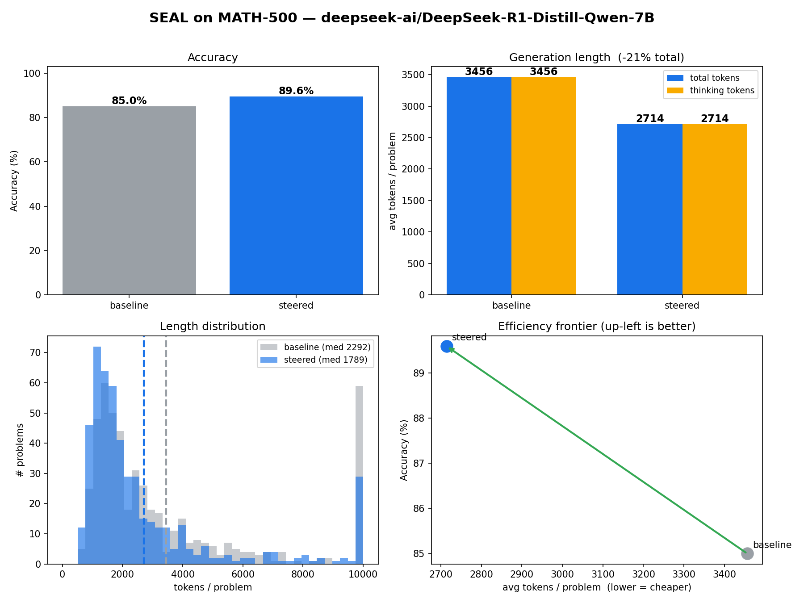
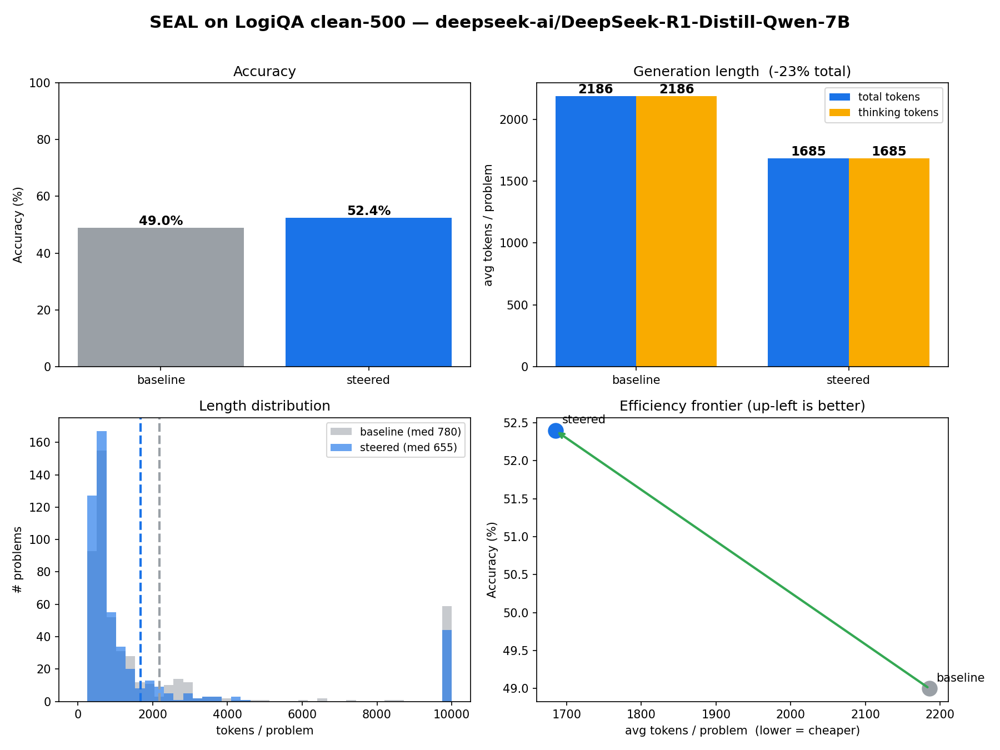
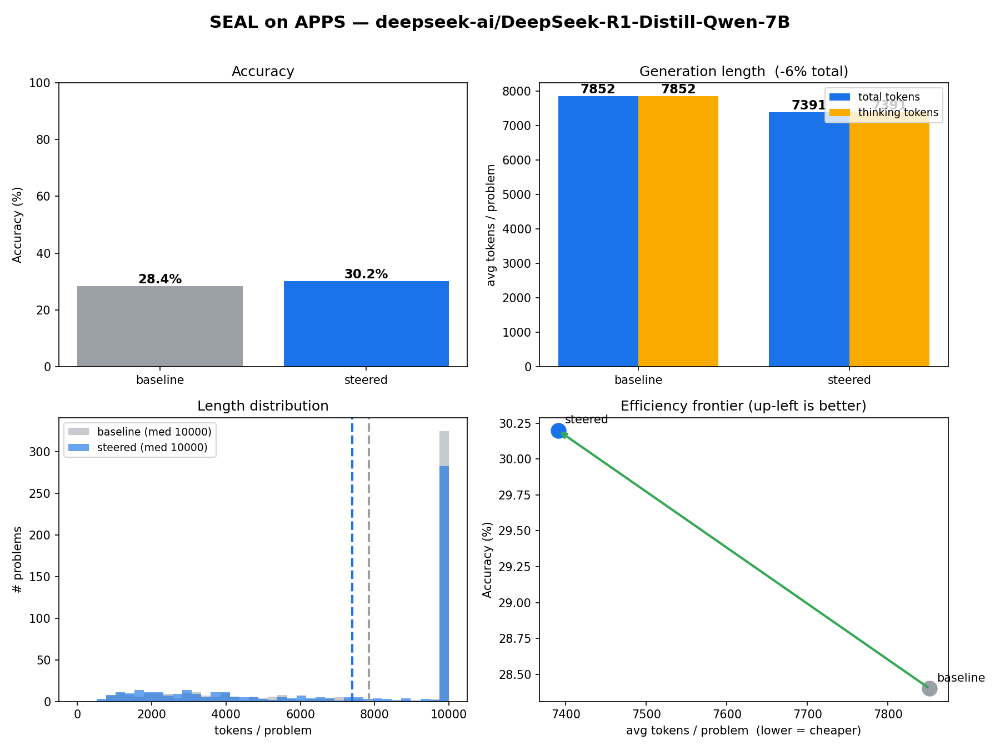

Scaling the combo vector to DeepSeek-R1-Distill-Qwen-7B
A 7B S_combo built from the three packed domain vectors
(S_math + S_code + S_logic): equal weights on unit-normalized sources,
then --norm mean-source, same recipe as
the 1.5B combo construction.
Evaluated steered-only on MATH-500, LogiQA clean-500, and APPS against
this cell's unsteered baseline. Companion to the
7B MATH / APPS vector report
and the 1.5B progress report
S_combo tables.
results_for_7b_logic_vectors/…/baseline/), not Akhilesh's
MATH baseline 84.4% or the dirty math→LogiQA 500.
Full results
| Domain | Eval set | Samples base / steer |
Acc base |
Acc steered |
Δ acc | Tokens base |
Tokens steered |
Δ len |
|---|---|---|---|---|---|---|---|---|
| Math (MATH-500) | held-out test, random 500 | 500 / 500 | 85.0% | 89.6% | +4.6 | 3,456 | 2,714 | −21.5% |
| Logic (LogiQA) | clean English-500 | 500 / 500 | 49.0% | 52.4% | +3.4 | 2,186 | 1,685 | −22.9% |
| Code (APPS) | test, random 500 | 500 / 500 | 28.4% | 30.2% | +1.8 | 7,852 | 7,391 | −5.9% |
--norm mean-source so coef = −1.0 is a
like-for-like intervention (see
s_combo_construction.html).
Applied by adding coef × vector at layer 20.
Same 7B protocol as the other 7B vector evals: chat,
--remove_bos, greedy, max_tokens=10000, n=500
seed 42. Steered-only; unsteered baseline folders are reused, not
regenerated.
- Model:
deepseek-ai/DeepSeek-R1-Distill-Qwen-7B(hidden_size 3584). - Packed vector
vectors/S_combo_7b.pt: shape[3584], fp32, ‖S‖ ≈ 85.04, SHA2562695da60…aff0. Cosine vs sources: math +0.9445 / code +0.9384 / logic +0.8931. Pairwise source cosines all > 0. - LogiQA uses
data/LogiQA/eval_rand42_500_clean.jsonplus--logiqa_english_only. Do not pair withresults_for_7b_math_vectors/LogiQA/(legacyeval_rand42_500.json, 16 train overlaps). - MATH-500 baseline here is 85.0% from this cell's
unsteered job. Akhilesh's 7B MATH baseline on main is 84.4% —
close, different run.
scripts/report_stats.pykeeps them as separate benchmarks (math500_7bvsmath500_7b_s_combo). - APPS is pass@1 on the test split, random 500, seed 42. Length columns
are mean generated tokens from the 7B tokenizer
(
add_special_tokens=False), same asscripts/report_stats.py. Accuracy is frommetrics.json. Cap hits (n ≥ 9990): MATH 11.6% → 5.6%; LogiQA 11.8% → 8.8%; APPS 65.0% → 56.6%.
Dashboards
Accuracy, length, and distribution from visualize_results.py
with the 7B tokenizer. PNGs also live under
results/results_for_7b_combo_vectors/<bench>/figures/.

S_combo on MATH-500: 85.0% → 89.6%

S_combo on LogiQA clean-500: 49.0% → 52.4%

S_combo on APPS: 28.4% → 30.2% pass@1